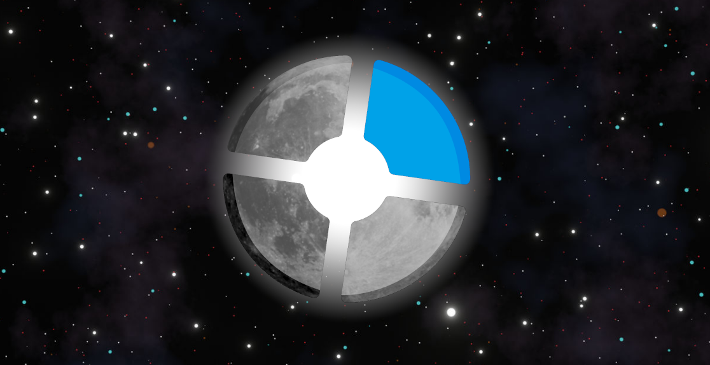

We now have a Website!
February 18th, 2026by: Moonrider 
Took us long enough, huh? Yep, we finally made a central website for our patrons on Moon's Pub, an easily navigatable page with plenty of useful junk for you to sift through. This site links to most things related to Moon's Pub, such as our (now public) sourcebans and discord. Visual and Functional updates will come to this website, as some people in my staff team has access to the raw HTMLs. So expect this website to look alot nicer and cleaner down the road!
We have also set this website as the default MOTD page for our TF2C servers so everything can be easily accessed right from the game. Cool, huh?